Sorghum
Sorghum species
Description: There are many different kinds of sorghum, all of which bear grains in heads at the top of the plants. The grains are brown, white, red, or black. Sorghum is the main food crop in many parts of the world.
Habitat and Distribution: Sorghum is found worldwide, usually in warmer climates.
All species are found in open, sunny areas.
Edible Parts: The grains are edible at any stage of development. When young, the grains are milky and edible raw. Boil the older grains. Sorghum is a nutritious food.
Other Uses: Use the stems of tall sorghum as building materials.
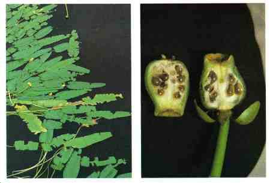
Spatterdock or yellow water lily
Nuphar species
Description: This plant has leaves up to 60 centimeters long with a triangular notch at the base. The shape of the leaves is somewhat variable. The plant's yellow flowers are 2.5 centimeter across and develop into bottle-shaped fruits. The fruits are green when ripe.
Habitat and Distribution: These plants grow throughout most of North America. They are found in quiet, fresh, shallow water (never deeper than 1.8 meters).
Edible Parts: All parts of the plant are edible. The fruits contain several dark brown seeds you can parch or roast and then grind into flour. The large rootstock contains starch. Dig it out of the mud, peel off the outside, and boil the flesh. Sometimes the rootstock contains large quantities of a very bitter compound. Boiling in several changes of water may remove the bitterness.

Sterculia
Sterculia foetida
Description: Sterculias are tall trees, rising in some instances to 30 meters. Their leaves are either undivided or palmately lobed. Their flowers are red or purple. The fruit of all sterculias is similar in aspect, with a red, segmented seedpod containing many edible black seeds.
Habitat and Distribution: There are over 100 species of sterculias distributed through all warm or tropical climates. They are mainly forest trees.
Edible Parts: The large, red pods produce a number of edible seeds. The seeds of all sterculias are edible and have a pleasant taste similar to cocoa. You can eat them like nuts, either raw or roasted.
Avoid eating large quantities. The seeds may have a laxative effect.
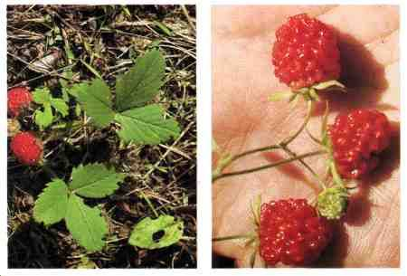
Strawberry
Fragaria species
Description: Strawberry is a small plant with a three-leaved growth pattern. It has small, white flowers usually produced during the spring. Its fruit is red and fleshy.
Habitat and Distribution: Strawberries are found in the North Temperate Zone and also in the high mountains of the southern Western Hemisphere. Strawberries prefer open, sunny areas. They are commonly planted.
Edible Parts: The fruit is edible fresh, cooked, or dried. Strawberries are a good source of vitamin C. You can also eat the plant's leaves or dry them and make a tea with them.
WARNING
Eat only white-flowering true strawberries. Other similar plants without white flowers can be poisonous.
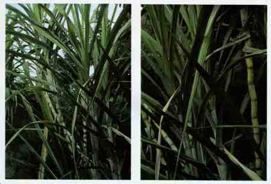
Sugarcane
Saccharum officinarum
Description: This plant grows up to 4.5 meters tall. It is a grass and has grasslike leaves. Its green or reddish stems are swollen where the leaves grow. Cultivated sugarcane seldom flowers.
Habitat and Distribution: Look for sugarcane in fields. It grows only in the tropics
(throughout the world). Because it is a crop, it is often found in large numbers.
Edible Parts: The stem is an excellent source of sugar and is very nutritious. Peel the outer portion off with your teeth and eat the sugarcane raw. You can also squeeze juice out of the sugarcane.

Sugar palm
Arenga pinnata
Description: This tree grows about 15 meters high and has huge leaves up to 6 meters long. Needlelike structures stick out of the bases of the leaves. Flowers grow below the leaves and form large conspicuous dusters from which the fruits grow.
Habitat and Distribution: This palm is native to the East Indies but has been planted in many parts off the tropics. It can be found at the margins of forests.
Edible Parts: The chief use of this palm is for sugar. However, its seeds and the tip of its stems are a survival food. Bruise a young flower stalk with a stone or similar object and collect the juice as it comes out. It is an excellent source of sugar. Boil the seeds.
Use the tip of the stems as a vegetable.
The flesh covering the seeds may cause dermatitis.
Other Uses: The shaggy material at the base of the leaves makes an excellent rope as it is strong and resists decay.
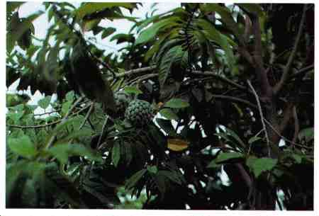
Sweetsop
Annona squamosa
Description: This tree is small, seldom more than 6 meters tall, and multi-branched.
It has alternate, simple, elongate, dark green leaves. Its fruit is green when ripe, round in shape, and covered with protruding bumps on its surface. The fruit's flesh is white and creamy.
Habitat and Distribution: Look for sweetsop at margins of fields, near villages, and around homesites in tropical regions.
Edible Parts: The fruit flesh is edible raw.
Other Uses: You can use the finely ground seeds as an insecticide.
The ground seeds are extremely dangerous to the eyes.
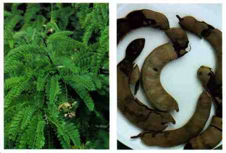
Tamarind
Tamarindus indica
Description: The tamarind is a large, densely branched tree, up to 25 meters tall. Its has pinnate leaves (divided like a feather) with 10 to 15 pairs of leaflets.
Habitat and Distribution: The tamarind grows in the drier parts of Africa, Asia, and the Philippines. Although it is thought to be a native of Africa, it has been cultivated in India for so long that it looks like a native tree. It is also found in the American tropics, the West Indies, Central America, and tropical South America.
Edible Parts: The pulp surrounding the seeds is rich in vitamin C and is an important survival food. You can make a pleasantly acid drink by mixing the pulp with water and sugar or honey and letting the mixture mature for several days. Suck the pulp to relieve thirst. Cook the young, unripe fruits or seedpods with meat. Use the young leaves in soup. You must cook the seeds. Roast them above a fire or in ashes. Another way is to remove the seed coat and soak the seeds in salted water and grated coconut for 24 hours, then cook them. You can peel the tamarind bark and chew it.

Taro, cocoyam, elephant ears, eddo, dasheen
Colocasia and Alocasia species
Description: All plants in these groups have large leaves, sometimes up to 1.8 meters tall, that grow from a very short stem. The rootstock is thick and fleshy and filled with starch.
Habitat and Distribution: These plants grow in the humid tropics. Look for them in fields and near homesites and villages.
Edible Parts: All parts of the plant are edible when boiled or roasted. When boiling, change the water once to get rid of any poison.
If eaten raw, these plants will cause a serious inflammation of the mouth and throat.
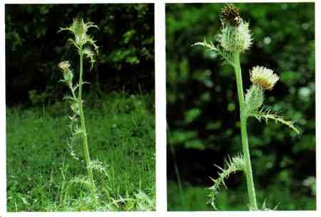
Thistle
Cirsium species
Description: This plant may grow as high as 1.5 meters. Its leaves are long-pointed, deeply lobed, and prickly.
Habitat and Distribution: Thistles grow worldwide in dry woods and fields.
Edible Parts: Peel the stalks, cut them into short sections, and boil them before eating. The roots are edible raw or cooked.
Some thistle species are poisonous.
Other Uses: Twist the tough fibers of the stems to make a strong twine.
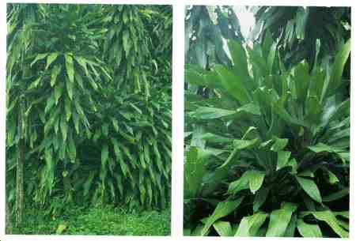
Ti
Cordyline terminalis
Description: The ti has unbranched stems with straplike leaves often clustered at the tip of the stem. The leaves vary in color and may be green or reddish. The flowers grow at the plant's top in large, plumelike clusters. The ti may grow up to 4.5 meters tall.
Habitat and Distribution: Look for this plant at the margins of forests or near homesites in tropical areas. It is native to the Far East but is now widely planted in tropical areas worldwide.
Edible Parts: The roots and very tender young leaves are good survival food. Boil or bake the short, stout roots found at the base of the plant. They are a valuable source of starch. Boil the very young leaves to eat. You can use the leaves to wrap other food to cook over coals or to steam.
Other Uses: Use the leaves to cover shelters or to make a rain cloak. Cut the leaves into liners for shoes; this works especially well if you have a blister. Fashion temporary sandals from the ti leaves. The terminal leaf, if not completely unfurled, can be used as a sterile bandage. Cut the leaves into strips, then braid the strips into rope.
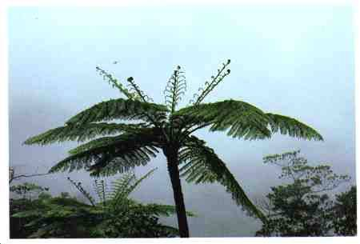
Tree fern
Various genera
Description: Tree ferns are tall trees with long, slender trunks that often have a very rough, barklike covering. Large, lacy leaves uncoil from the top of the trunk.
Habitat and Distribution: Tree ferns are found in wet, tropical forests.
Edible Parts: The young leaves and the soft inner portion of the trunk are edible. Boil the young leaves and eat as greens. Eat the inner portion of the trunk raw or bake it.

Tropical almond
Terminalia catappa
Description: This tree grows up to 9 meters tall. Its leaves are evergreen, leathery,
45 centimeters long, 15 centimeters wide, and very shiny. It has small, yellowishgreen flowers. Its fruit is flat, 10 centimeters long, and not quite as wide. The fruit is green when ripe.
Habitat and Distribution: This tree is usually found growing near the ocean. It is a common and often abundant tree in the Caribbean and Central and South America. It is also found in the tropical rain forests of southeastern Asia, northern Australia, and
Polynesia.
Edible Parts: The seed is a good source of food. Remove the fleshy, green covering and eat the seed raw or cooked.

Walnut
Juglans species
Description: Walnuts grow on very large trees, often reaching 18 meters tall. The divided leaves characterize all walnut spades. The walnut itself has a thick outer husk that must be removed to reach the hard inner shell of the nut.
Habitat and Distribution: The English walnut, in the wild state, is found from southeastern Europe across Asia to China and is abundant in the Himalayas. Several other species of walnut are found in China and Japan. The black walnut is common in the eastern United States.
Edible Parts: The nut kernel ripens in the autumn. You get the walnut meat by cracking the shell. Walnut meats are highly nutritious because of their protein and oil content.
Other Uses: You can boil walnuts and use the juice as an antifungal agent. The husks of "green" walnuts produce a dark brown dye for clothing or camouflage. Crush the husks of "green" black walnuts and sprinkle them into sluggish water or ponds for use as fish poison.
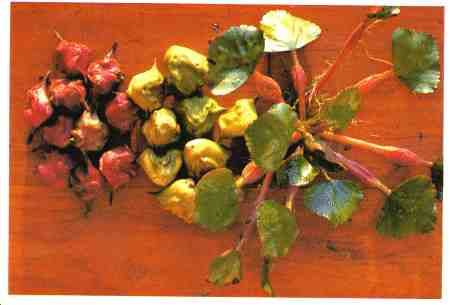
Water chestnut
Trapa natans
Description: The water chestnut is an aquatic plant that roots in the mud and has finely divided leaves that grow underwater. Its floating leaves are much larger and coarsely toothed. The fruits, borne underwater, have four sharp spines on them.
Habitat and Distribution: The water chestnut is a freshwater plant only. It is a native of Asia but has spread to many parts of the world in both temperate and tropical areas.
Edible Parts: The fruits are edible raw and cooked. The seeds are also a source of food.
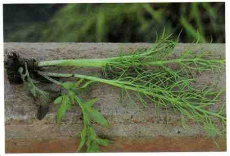
Water lettuce
Ceratopteris species
Description: The leaves of water lettuce are much like lettuce and are very tender and succulent. One of the easiest ways of distinguishing water lettuce is by the little plantlets that grow from the margins of the leaves. These little plantlets grow in the shape of a rosette. Water lettuce plants often cover large areas in the regions where they are found.
Habitat and Distribution: Found in the tropics throughout the Old World in both
Africa and Asia. Another kind is found in the New World tropics from Florida to South
America. Water lettuce grows only in very wet places and often as a floating water plant. Look for water lettuce in still lakes, ponds, and the backwaters of rivers.
Edible Parts: Eat the fresh leaves like lettuce. Be careful not to dip the leaves in the contaminated water in which they are growing. Eat only the leaves that are well out of the water.
This plant has carcinogenic properties and should only be used as a last resort.
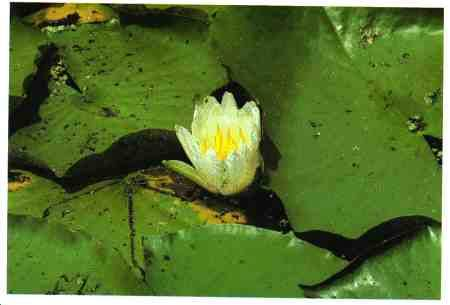
Water lily
Nymphaea odorata
Description: These plants have large, triangular leaves that float on the water's surface, large, fragrant flowers that are usually white, or red, and thick, fleshy rhizomes that grow in the mud.
Habitat and Distribution: Water lilies are found throughout much of the temperate and subtropical regions.
Edible Parts: The flowers, seeds, and rhizomes are edible raw or cooked. To prepare rhizomes for eating, peel off the corky rind. Eat raw, or slice thinly, allow to dry, and then grind into flour. Dry, parch, and grind the seeds into flour.
Other Uses: Use the liquid resulting from boiling the thickened root in water as a medicine for diarrhea and as a gargle for sore throats.
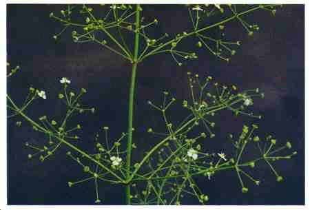
Water plantain
Alisma plantago-aquatica
Description: This plant has small, white flowers and heart-shaped leaves with pointed tips. The leaves are clustered at the base of the plant.
Habitat and Distribution: Look for this plant in fresh water and in wet, full sun areas in Temperate and Tropical Zones.
Edible Parts: The rootstocks are a good source of starch. Boil or soak them in water to remove the bitter taste.
To avoid parasites, always cook aquatic plants.

Wild caper
Capparis aphylla
Description: This is a thorny shrub that loses its leaves during the dry season. Its stems are gray-green and its flowers pink.
Habitat and Distribution: These shrubs form large stands in scrub and thorn forests and in desert scrub and waste. They are common throughout North Africa and the
Middle East.
Edible Parts: The fruit and the buds of young shoots are edible raw.
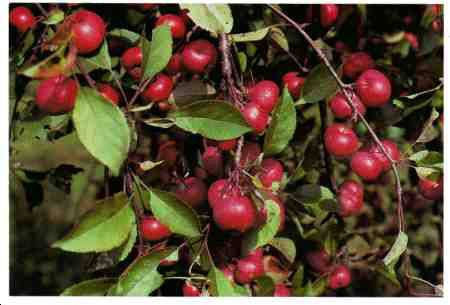
Wild crab apple or wild apple
Malus species
Description: Most wild apples look enough like domestic apples that the survivor can easily recognize them. Wild apple varieties are much smaller than cultivated kinds;
the largest kinds usually do not exceed 5 to 7.5 centimeters in diameter, and most often less. They have small, alternate, simple leaves and often have thorns. Their flowers are white or pink and their fruits reddish or yellowish.
Habitat and Distribution: They are found in the savanna regions of the tropics. In temperate areas, wild apple varieties are found mainly in forested areas. Most frequently, they are found on the edge of woods or in fields. They are found throughout the Northern Hemisphere.
Edible Parts: Prepare wild apples for eating in the same manner as cultivated kinds.
Eat them fresh, when ripe, or cooked. Should you need to store food, cut the apples into thin slices and dry them. They are a good source of vitamins.
Apple seeds contain cyanide compounds. Do not eat.
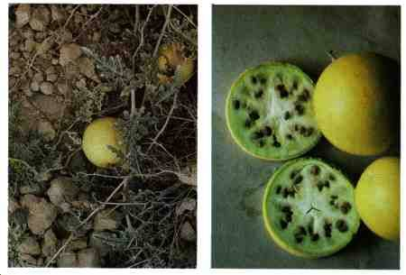
Wild desert gourd or colocynth
Citrullus colocynthis
Description: The wild desert gourd, a member of the watermelon family, produces an
2.4- to 3-meter-long ground-trailing vine. The perfectly round gourds are as large as an orange. They are yellow when ripe.
Habitat and Distribution: This creeping plant can be found in any climatic zone, generally in desert scrub and waste areas. It grows abundantly in the Sahara, in many
Arab countries, on the southeastern coast of India, and on some of the islands of the
Aegean Sea. The wild desert gourd will grow in the hottest localities.
Edible Parts: The seeds inside the ripe gourd are edible after they are completely separated from the very bitter pulp. Roast or boil the seeds--their kernels are rich in oil. The flowers are edible. The succulent stem tips can be chewed to obtain water.

Wild dock and wild sorrel
Rumex crispus and Rumex acetosella
Description: Wild dock is a stout plant with most of its leaves at the base of its stem that is commonly 15 to 30 centimeters brig. The plants usually develop from a strong, fleshy, carrotlike taproot. Its flowers are usually very small, growing in green to purplish plumelike clusters. Wild sorrel similar to the wild dock but smaller. Many of the basal leaves are arrow-shaped but smaller than those of the dock and contain a sour juice.
Habitat and Distribution: These plants can be found in almost all climatic zones of the world, in areas of high as well as low rainfall. Many kinds are found as weeds in fields, along roadsides, and in waste places.
Edible Parts: Because of tender nature of the foliage, the sorrel and the dock are useful plants, especially in desert areas. You can eat their succulent leaves fresh or slightly cooked. To take away the strong taste, change the water once or twice during cooking. This latter tip is a useful hint in preparing many kinds of wild greens.

Wild fig
Ficus species
Description: These trees have alternate, simple leaves with entire margins. Often, the leaves are dark green and shiny. All figs have a milky, sticky juice. The fruits vary in size depending on the species, but are usually yellow-brown when ripe.
Habitat and Distribution: Figs are plants of the tropics and semitropics. They grow in several different habitats, including dense forests, margins of forests, and around human settlements.
Edible Parts: The fruits are edible raw or cooked. Some figs have little flavor.

Wild gourd or luffa sponge
Luffa cylindrica
Description: The luffa sponge is widely distributed and fairly typical of a wild squash.
There are several dozen kinds of wild squashes in tropical regions. Like most squashes, the luffa is a vine with leaves 7.5 to 20 centimeters across having 3 lobes.
Some squashes have leaves twice this size. Luffa fruits are oblong or cylindrical, smooth, and many-seeded. Luffa flowers are bright yellow. The luffa fruit, when mature, is brown and resembles the cucumber.
Habitat and Distribution: A member of the squash family, which also includes the watermelon, cantaloupe, and cucumber, the luffa sponge is widely cultivated throughout the Tropical Zone. It may be found in a semiwild state in old clearings and abandoned gardens in rain forests and semievergreen seasonal forests.
Edible Parts: You can boil the young green (half-ripe) fruit and eat them as a vegetable. Adding coconut milk will improve the flavor. After ripening, the luffa sponge develops an inedible spongelike texture in the interior of the fruit. You can also eat the tender shoots, flowers, and young leaves after cooking them. Roast the mature seeds a little and eat them like peanuts.
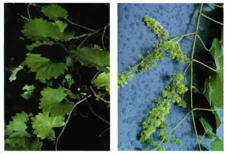
Wild grape vine
Vitis species
Description: The wild grape vine climbs with the aid of tendrils. Most grape vines produce deeply lobed leaves similar to the cultivated grape. Wild grapes grow in pyramidal, hanging bunches and are black-blue to amber, or white when ripe.
Habitat and Distribution: Wild grapes are distributed worldwide. Some kinds are found in deserts, others in temperate forests, and others in tropical areas. Wild grapes are commonly found throughout the eastern United States as well as in the southwestern desert areas. Most kinds are rampant climbers over other vegetation.
The best place to look for wild grapes is on the edges of forested areas. Wild grapes are also found in Mexico. In the Old World, wild grapes are found from the
Mediterranean region eastward through Asia, the East Indies, and to Australia. Africa also has several kinds of wild grapes.
Edible Parts: The ripe grape is the portion eaten. Grapes are rich in natural sugars and, for this reason, are much sought after as a source of energy-giving wild food.
None are poisonous. Other Uses: You can obtain water from severed grape vine stems. Cut off the vine at the bottom and place the cut end in a container. Make a slant-wise cut into the vine about 1.8 meters upon the hanging part. This cut will allow water to flow from the bottom end. As water diminishes in volume, make additional cuts further down the vine.
To avoid poisoning, do not eat grapelike fruits with only a single seed (moonseed).

Wild onion and garlic
Allium species
Description: Allium cernuum is an example of the many species of wild onions and garlics, all easily recognized by their distinctive odor.
Habitat and Distribution: Wild onions and garlics are found in open, sunny areas throughout the temperate regions. Cultivated varieties are found anywhere in the world.
Edible Parts: The bulbs and young leaves are edible raw or cooked. Use in soup or to flavor meat.
There are several plants with onionlike bulbs that are extremely poisonous. Be certain that the plant you are using is a true onion or garlic. Do not eat bulbs with no onion smell.
Other Uses: Eating large quantities of onions will give your body an odor that will help to repel insects. Garlic juice works as an antibiotic on wounds
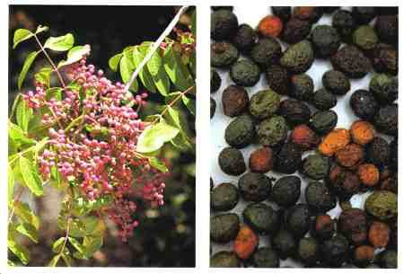
Wild pistachio
Pistacia species
Description: Some kinds of pistachio trees are evergreen, while others lose their leaves during the dry season. The leaves alternate on the stem and have either three large leaves or a number of leaflets. The fruits or nuts are usually hard and dry at maturity.
Habitat and Distribution: About seven kinds of wild pistachio nuts are found in desert, or semidesert areas surrounding the Mediterranean Sea to Turkey and
Afghanistan. It is generally found in evergreen scrub forests or scrub and thorn forests.
Edible Parts: You can eat the oil nut kernels after parching them over coals.
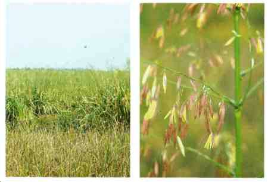
Wild rice
Zizania aquatica
Description: Wild rice is a tall grass that averages 1 to 1.5 meters in height, but may reach 4.5 meters. Its grain grows in very loose heads at the top of the plant and is dark brown or blackish when ripe.
Habitat and Distribution: Wild rice grows only in very wet areas in tropical and temperate regions.
Edible Parts: During the spring and summer, the central portion of the lower sterns and root shoots are edible. Remove the tough covering before eating. During the late summer and fail, collect the straw-covered husks. Dry and parch the husks, break them, and remove the rice. Boil or roast the rice and then beat it into flour.
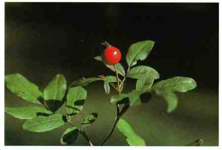
Wild rose
Rosa species
Description: This shrub grows 60 centimeters to 2.5 meters high. It has alternate leaves and sharp prickles. Its flowers may be red, pink, or yellow. Its fruit, called rose hip, stays on the shrub year-round.
Habitat and Distribution: Look for wild roses in dry fields and open woods throughout the Northern Hemisphere.
Edible Parts: The flowers and buds are edible raw or boiled. In an emergency, you can peel and eat the young shoots. You can boil fresh, young leaves in water to make a tea. After the flower petals fall, eat the rose hips; the pulp is highly nutritious and an excellent source of vitamin C. Crush or grind dried rose hips to make flour.
Eat only the outer portion of the fruit as the seeds of some species are quite prickly and can cause internal distress.

Wood sorrel
Oxalis species
Description: Wood sorrel resembles shamrock or four-leaf clover, with a bell-shaped pink, yellow, or white flower.
Habitat and Distribution: Wood sorrel is found in Temperate Zones worldwide, in lawns, open areas, and sunny woods.
Edible Parts: Cook the entire plant.
Eat only small amounts of this plant as it contains a fairly high concentration of oxalic acid that can be harmful.
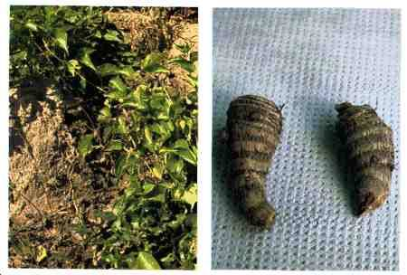
Yam
Dioscorea species
Description: These plants are vines that creep along the ground. They have alternate, heart-or arrow-shaped leaves. Their rootstock may be very large and weigh many kilograms.
Habitat and Distribution: True yams are restricted to tropical regions where they are an important food crop. Look for yams in fields, clearings, and abandoned gardens.
They are found in rain forests, semievergreen seasonal forests, and scrub and thorn forests in the tropics. In warm temperate areas, they are found in seasonal hardwood or mixed hardwood-coniferous forests, as well as some mountainous areas.
Edible Parts: Boil the rootstock and eat it as a vegetable.

Yam bean
Pachyrhizus erosus
Description: The yam bean is a climbing plant of the bean family, with alternate, three-parted leaves and a turniplike root. The bluish or purplish flowers are pealike in shape. The plants are often so rampant that they cover the vegetation upon which they are growing.
Habitat and Distribution: The yam bean is native to the American tropics, but it was carried by man years ago to Asia and the Pacific islands. Now it is commonly cultivated in these places, and is also found growing wild in forested areas. This plant grows in wet areas of tropical regions.
Edible Parts: The tubers are about the size of a turnip and they are crisp, sweet, and juicy and have a nutty flavor. They are nourishing and at the same time quench the thirst. Eat them raw or boiled. To make flour, slice the raw tubers, let them dry in the sun, and grind into a flour that is high in starch and may be used to thicken soup.
The raw seeds are poisonous.